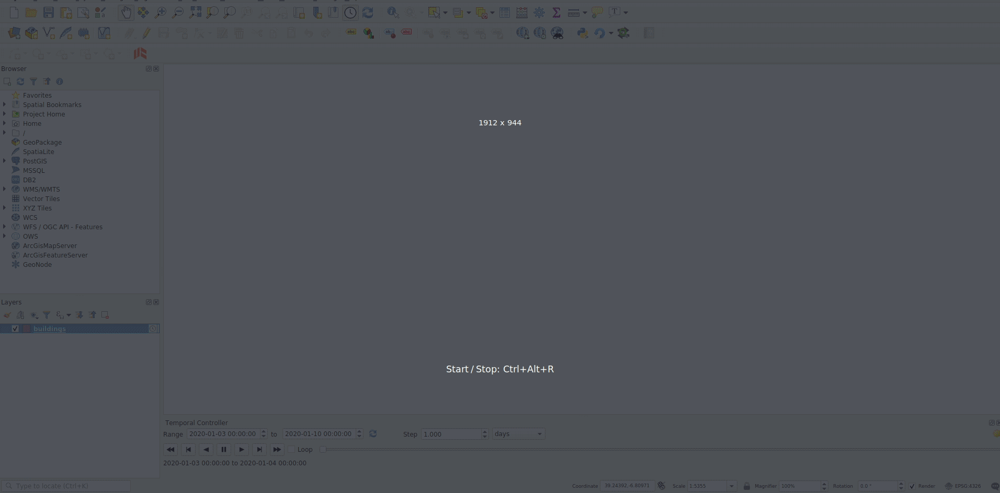
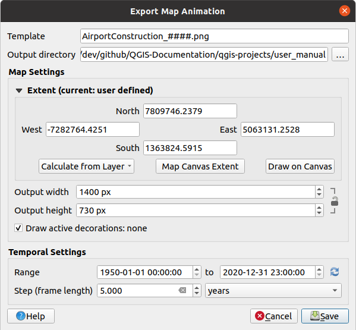
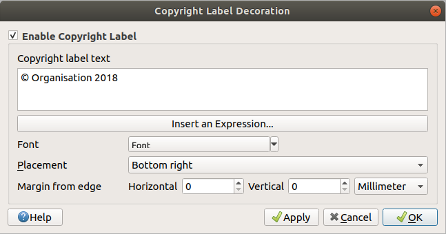
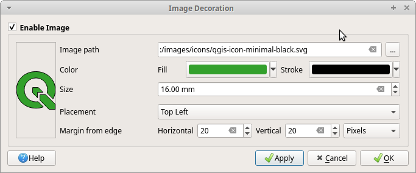

重要
翻訳は あなたが参加できる コミュニティの取り組みです。このページは現在 100.00% 翻訳されています。
11.1. 2Dマップビュー
2Dマップビュー（ マップキャンバス とも呼びます）は、地図が表示される中心的な場所です。デフォルトでは、QGISは単一のマップビュー（ メインマップ と呼ばれます）を開き、レイヤを2Dで表示し、 レイヤ パネルと緊密に結合しています。このウィンドウは、読み込んだレイヤに適用したレンダリング（シンボロジ、ラベル、可視性など）を反映します。

図 11.1 QGISのユーザインタフェース
11.1.1. マップビューについて詳しくみる
レイヤを追加（たとえば データを開く を参照）すると、QGISは自動的にそのレイヤのCRSを探します。空のQGISプロジェクトから始める場合、デフォルトで別のCRSがプロジェクトに設定されているとき（ プロジェクトの座標参照系 を参照）には、レイヤの範囲は「オンザフライ」にそのCRSに変換され、マップビューはその範囲にズームします。プロジェクトにすでにレイヤがある場合には、マップキャンバスのサイズ変更は実行されず、現在のマップキャンバス範囲にある地物が表示されるだけです。
マップビューをクリックして、地図のさまざまな場所にパンやズームすることでマップを操作することができます。 ナビゲーションツールバー と メニューには専用のツールがあり、キーボードやマウスボタンによるショートカットもあります。
ツール |
利用方法 |
|---|---|
|
|
|
|
|
|
|
レイヤ パネルで選択されたレイヤの選択地物にマップをパンします。 |
|
レイヤ パネルで選択されたレイヤの選択地物にズームします。 レイヤのコンテキストメニューからも利用できます |
|
レイヤ パネルで選択されたレイヤすべてを合わせた範囲にズームします。 レイヤのコンテキストメニューからも利用できます |
|
プロジェクト内の全てのレイヤを含む範囲、または プロジェクト範囲の全域 にズームします。 |
|
マップを履歴内の前の表示範囲にズームします。 |
|
マップを履歴内の次の表示範囲にズームします。 |
|
アクティブなラスタレイヤの1ピクセルがスクリーンの1ピクセルに一致するようにマップを拡大縮小します。 レイヤのコンテキストメニューからも利用できます |
マウスホイール |
|
キーボード |
|


地図上を右クリックすると、地図のCRS、WGS84あるいはカスタムCRSで、クリックした点の  座標をコピー できます。コピーされた情報は式やスクリプト、テキストエディタやスプレッドシート等に貼り付けることができます。
座標をコピー できます。コピーされた情報は式やスクリプト、テキストエディタやスプレッドシート等に貼り付けることができます。
11.1.2. 地図のレンダリングの制御
デフォルトでは、QGISはマップキャンバスが更新されるたびにすべての可視レイヤをレンダリングします。マップキャンバスの更新を発生させるイベントは次のとおりです。
レイヤの可視性の変更
可視レイヤのシンボロジの変更
レイヤの追加
地図のパン・ズーム
QGISウィンドウのサイズ変更
QGISではいくつかの方法でレンダリング処理を制御できます。
グローバルレベル での制御
例えば 縮尺に応じたレンダリング を使用した、レイヤ毎の制御
GUI上の専用ツールによる制御
マップの描画を停止するには、 Esc キーを押します。これによりマップキャンバスの更新は中断され、マップは部分的に描画されたままになります。ただし、 Esc を押してからマップの描画が停止するまでには少し時間がかかる場合があります。
レンダリングを中断するには、ステータスバーの右下隅にある  レンダ チェックボックスをクリックします。 レンダ がチェックされていない場合、QGISは上で述べた通常のトリガーでは反応せず、キャンバスの再描画を行いません。レンダリングを中断したい場合の例としては、以下のようなものがあります：
レンダ チェックボックスをクリックします。 レンダ がチェックされていない場合、QGISは上で述べた通常のトリガーでは反応せず、キャンバスの再描画を行いません。レンダリングを中断したい場合の例としては、以下のようなものがあります：
多数のレイヤを追加し、描画される前にシンボルを設定したい場合
１つもしくは多数の巨大なレイヤを追加し、描画される前に縮尺依存表示設定を行いたい場合
１つもしくは多数の巨大なレイヤを追加し、描画される前に特定のビューにズームしたい場合
上で挙げたいずれかの組み合わせの場合
レンダ がチェックされるとレンダリングが有効になり、即座にマップキャンバスが更新されます。
11.1.3. マップキャンバスの時間制御
QGISは読み込んだレイヤの時間制御を扱う、つまり、時間の変化に基づいてマップキャンバスのレンダリングを変更することができます。これを実現するには、以下の設定が必要です。
動的な時系列プロパティが設定されているレイヤ。QGISはカスタム設定により、データプロバイダ間で別々の時系列コントロールをサポートしています。これは主に、レイヤが表示される時間範囲を設定します。
ラスタレイヤ ：レイヤの表示・非表示をコントロールします
WMTSレイヤ ：固定の時間範囲に基づくか、動的な時間範囲に従って、データをレンダリングするかどうかを制御します
ベクタレイヤ ：地物は、その属性に関連付けられた時間の値に基づいてフィルタリングされます
メッシュレイヤ ：アクティブなデータセットグループの値を動的に表示します
レイヤの動的時系列オプションを有効化した場合には、 レイヤ パネルのレイヤ名の隣に
 アイコンが表示され、そのレイヤが時系列コントロールされていることを知らせます。このアイコンをクリックすると、時系列設定を更新できます。
アイコンが表示され、そのレイヤが時系列コントロールされていることを知らせます。このアイコンをクリックすると、時系列設定を更新できます。時系列コントローラパネル を使用して、マップキャンバスの時系列ナビゲーションを有効化します。このパネルは、以下の方法で開くことができます。
ナビゲーション ツールバー内にある
 時系列コントローラパネル アイコンを使用する
時系列コントローラパネル アイコンを使用するメニューを選択する
11.1.3.1. 時系列コントローラパネル
時系列コントローラ パネルには、以下のモードがあります：

図 11.2 ナビゲーションモードの時系列コントローラパネル
 時系列ナビを無効化 ：全ての時系列設定を無効化し、表示状態のレイヤは通常どおりにレンダリングされます
時系列ナビを無効化 ：全ての時系列設定を無効化し、表示状態のレイヤは通常どおりにレンダリングされます 固定範囲の時系列ナビ ：時間範囲を設定し、レイヤ（または地物）の時間範囲がこの範囲内に重なるもののみがマップ上に表示されます
固定範囲の時系列ナビ ：時間範囲を設定し、レイヤ（または地物）の時間範囲がこの範囲内に重なるもののみがマップ上に表示されます アニメーション時系列ナビ ：時間範囲を設定し、ステップに分割して、各フレームとレイヤ（または地物）の時間範囲が重なるもののみがマップ上に表示されます
アニメーション時系列ナビ ：時間範囲を設定し、ステップに分割して、各フレームとレイヤ（または地物）の時間範囲が重なるもののみがマップ上に表示されます 時系列設定 は、アニメーション全般の制御に関する設定です
時系列設定 は、アニメーション全般の制御に関する設定ですフレーム数/秒 ：1秒あたりに表示されるステップ数
 累積範囲 ：全てのアニメーションフレームで範囲の終了日時は異なりますが、開始日時は同じになります。これは、データの時間範囲にわたって「移動する時間窓」を表示するのではなく、時系列ビジュアライゼーションでデータを累積して表示したい場合に便利です。
累積範囲 ：全てのアニメーションフレームで範囲の終了日時は異なりますが、開始日時は同じになります。これは、データの時間範囲にわたって「移動する時間窓」を表示するのではなく、時系列ビジュアライゼーションでデータを累積して表示したい場合に便利です。
11.1.3.2. 時系列ナビのアニメーション
アニメーションは、時間範囲内の特定の時間で変化する可視レイヤのセットに基づいています。時系列アニメーションを作成するには、以下のようにします：
- アニメーション時系列ナビ をオンに切り替え、アニメーションプレーヤーウィジェットを表示します
作成したい アニメーション範囲 を入力します。
 ボタンを使用すると、範囲を以下のいずれかで設定できます：
ボタンを使用すると、範囲を以下のいずれかで設定できます：全範囲に設定 ：時系列コントロールが有効となっているレイヤの時間の全範囲に設定します
プロジェクト範囲に設定 ： プロジェクトのプロパティ で定義された範囲に設定します
単一レイヤ範囲に設定 ：時系列コントロールが有効となっているレイヤの一つから範囲を採用します
時間範囲を分割するための時間 ステップ を入力します。
秒から世紀まで、さまざまな単位がサポートされています。ソースのタイムスタンプもステップとして使用できます。これを選択した場合、プロジェクト内のレイヤで利用可能な全ての時間範囲をステップした時系列ナビゲーションとなります。これは、例えば不定期な日付の画像を提供するWMS-Tサービスのように、利用可能な日時が不連続となっているレイヤがプロジェクトに含まれている場合に便利です。このオプションでは、次に利用可能な画像が表示されるまでの時間間隔の分だけステップします。 ボタンをクリックすると、アニメーションをプレビューします。QGISは、設定した時刻におけるレイヤのレンダリングを使用したシーンを生成します。レイヤの表示は、個々の時間フレームが時間範囲に重なるかどうかに依存します。
ボタンをクリックすると、アニメーションをプレビューします。QGISは、設定した時刻におけるレイヤのレンダリングを使用したシーンを生成します。レイヤの表示は、個々の時間フレームが時間範囲に重なるかどうかに依存します。 図 11.3 レイヤの時系列ナビゲーション
アニメーションは、時間スライダーを動かすことでもプレビューできます。
ループ チェックボックスにチェックを入れると、 ボタンをクリックしてアニメーションを停止するまでは、アニメーションを繰り返し再生します。ビデオプレイヤーのボタンは全て使用できます。（マウスがサポートしている場合には）マップキャンバス上にカーソルを置いてマウスホイールを水平スクロールすることでも時間操作ができます。「スクラブ」、つまり時系列ナビゲーションスライダーを左右に移動させることでも操作できます。
シーンを表す一連の画像を生成したい場合には、
 アニメーションを出力 ボタンをクリックします。出力画像は、後でビデオ編集ソフトで結合できます。
アニメーションを出力 ボタンをクリックします。出力画像は、後でビデオ編集ソフトで結合できます。 図 11.4 マップキャンバスのアニメーションシーンの画像出力
11.1.4. 地図上の範囲のブックマーク
空間ブックマークは地理的な場所を「ブックマーク」し、後でその場所に戻ることができます。デフォルトでは、ブックマークは（ ユーザー・ブックマーク として）ユーザープロファイルに保存されるため、ユーザーが開いたどのプロジェクトからでもブックマークを利用できます。また、単一のプロジェクト に対して保存（ プロジェクト・ブックマーク ）することもでき、これはプロジェクトを他のユーザーと共有する場合に便利です。
11.1.4.1. ブックマークを作成する
ブックマークを作成するには、以下の手順で操作します：
関心のある領域にズームやパンし移動します
メニューオプションの を選択するか、 Ctrl+B を押す、もしくは ブラウザ パネル内の
 空間ブックマーク エントリを右クリックして、 新規空間ブックマーク を選択します。 ブックマークエディタ ダイアログが開きます。
空間ブックマーク エントリを右クリックして、 新規空間ブックマーク を選択します。 ブックマークエディタ ダイアログが開きます。
図 11.5 ブックマークエディタダイアログ
ブックマークにわかりやすい名前を付けます
関連するブックマークを保存するグループ名を入力または選択します。
範囲セレクタ ウィジェットを使用して、保存したい領域を選択します
マップの 回転 を変更します
領域に使用する CRS を指定します
ブックマークの 保存先 を ユーザー・ブックマーク か プロジェクト・ブックマーク のどちらにするか選択します（デフォルトでは、このドロップダウンリストは ユーザー・ブックマーク に設定されています）
保存 ボダンを押して、ブックマークをリストに追加します
同じ名前のブックマークを複数持てることに注意してください。
11.1.4.2. ブックマークを操作する
ブックマークを利用・管理するには、 空間ブックマーク パネル もしくは ブラウザ パネルを使用できます。
を選択するか Ctrl+7 を押すと、 空間ブックマークマネージャ パネルが開きます。 を選択するか Ctrl+Shift+B を押すと、 ブラウザ パネル内の 空間ブックマーク エントリが表示されます。
以下の作業を行うことができます：
タスク |
空間ブックマークマネージャ |
ブラウザ |
|---|---|---|
ブックマークにズーム |
ブックマーク上でダブルクリックするか、ブックマークを選択して |
ブックマーク上でダブルクリックするか、ブックマークをマップキャンバス上へドラッグ＆ドロップする、あるいはブックマークで右クリックし、 ブックマークにズーム を選択する |
ブックマークを削除する |
ブックマークを選択して |
ブックマークを右クリックして ブックマークを削除 を選択し、削除の確認を承認する |
ブックマークをXMLへエクスポート |
|
１つまたは（ユーザー、プロジェクト）両方のフォルダ、あるいはサブフォルダ（グループ）を選択し、右クリックして |
ブックマークをXMLからインポート |
|
ブックマークをインポートしたい場所として 空間ブックマーク エントリか、その中のフォルダ（ユーザーまたはプロジェクト）のどれかか、あるいはそのサブフォルダ（グループ）を決めて右クリックし、 |
ブックマークを編集 |
テーブル内の値を変えることでブックマークを変更することができる。名前、グループ名、範囲、そしてブックマークがプロジェクトに保存されるか否かを編集できる |
編集したいブックマークを右クリックし、 空間ブックマークを編集... を選択する。 ブックマーク・エディタ が開き、ブックマークを最初に作成した時のように、さまざまな点について再定義できる フォルダ間（ユーザー、プロジェクト）やサブフォルダ（グループ）間でブックマークをドラッグ＆ドロップすることもできる |


ブックマークのアクションの管理は、 空間ブックマークマネージャ 内の対象とするブックマークを右クリックすることでできます。ブックマークへのズームは、 ロケータ にブックマーク名を入力することでもできます。
11.1.5. 地図の整飾
地図整飾には、グリッド、タイトルラベル、著作権ラベル、画像、方位記号、スケールバー、そしてレイアウト範囲があります。 これらは地図要素を追加することによって地図を「整飾」するために使われます。
11.1.5.1. グリッド
 グリッド はマップキャンバスに座標グリッドと座標注釈を追加します。
グリッド はマップキャンバスに座標グリッドと座標注釈を追加します。
のメニューオプションを選択し、ダイアログを開きます。
図 11.6 グリッドダイアログ
- グリッドを有効にする にチェックを入れ、マップキャンバスに読み込まれたレイヤに応じてグリッド定義を設定します：
- 注釈の描画 にチェックを入れると、グリッドのマークの座標を表示します。以下の設定があります。
注記方向 は、ラベルがグリッド線に対して相対的にどのように配置されるかを設定します。これには以下の選択肢があります：
全てのラベルを 水平 あるいは 垂直 に配置する
水平と垂直 各ラベルは参照しているグリッドマークと平行です
境界線の方向 各ラベルはキャンバスの境界線に沿っており、参照するグリッドマークに垂直です
注記用フォント （テキストフォーマット、バッファ、影...） フォントセレクタウィジェット を使って設定します。
地図フレームへの距離 注記とマップキャンバスの端の間の余白距離です。 例えば画像形式やPDFに マップキャンバスをエクスポート する際に便利で、「紙」の境界上に注記が乗ってしまうことを避けられます。
座標精度
適用 ボタンをクリックして見た目が期待通りかを確認し、満足ならば OK ボタンをクリックします。
11.1.5.2. タイトルラベル
 タイトルラベル は タイトル でマップを整飾します。
タイトルラベル は タイトル でマップを整飾します。
タイトルラベル整飾を追加するには：
のメニューオプションを選択し、ダイアログを開きます。

図 11.7 タイトルラベルの装飾ダイアログ
- タイトルラベルの有効化 をチェックします
マップに追加したいタイトルのテキストを入力します。 式の挿入・編集... ボタンを使用して、テキストを動的にすることもできます。
ラベルの フォント を QGISの テキストの書式設定 オプションへフルアクセスできる フォントセレクタウィジェット を使用して選択します。フォントコンボボックスの右にある黒い矢印をクリックすると、フォントの色や不透明度を素早く設定することができます。
タイトルの 背景のバーの色 に適用する 色 を選択します。
キャンバス内のラベルの 配置 を選択します。選択肢は 左上 、 中上 （デフォルト）、 右上 、 左下 、 中下 そして 右下 です。
水平および/または垂直の 端からのマージン を設定することで、アイテムの配置を調整します。これらの値は ミリメートル または ピクセル 単位で指定するか、マップキャンバスの幅または高さの パーセント として設定することができます。
適用 ボタンをクリックして見た目が期待通りかを確認し、満足ならば OK ボタンをクリックします。
11.1.5.3. 著作権ラベル
 著作権ラベル は、 著作権 ラベルでマップを整飾するために使います。
著作権ラベル は、 著作権 ラベルでマップを整飾するために使います。
著作権ラベル整飾を追加するには：
のメニューオプションを選択し、ダイアログを開きます。
 図 11.8 著作権ラベル整飾ダイアログ
- 著作権ラベルを有効にする をチェックしてください
マップに追加したい著作権ラベルのテキストを入力します。 式の挿入・編集... ボタンを使用して、テキストを動的にすることもできます。
ラベルの フォント を QGISの テキストの書式設定 オプションへフルアクセスできる フォントセレクタウィジェット を使用して選択します。フォントコンボボックスの右にある黒い矢印をクリックすると、フォントの色や不透明度を素早く設定することができます。
キャンバス内のラベルの 配置 を選択します。選択肢は 左上 、 中上 、 右上 、 左下 、 中下 そして 右下（著作権整飾のデフォルト） です。
水平および/または垂直の 端からのマージン を設定することで、アイテムの配置を調整します。これらの値は ミリメートル または ピクセル 単位で指定するか、マップキャンバスの幅または高さの パーセント として設定することができます。
適用 ボタンをクリックして見た目が期待通りかを確認し、満足ならば OK ボタンをクリックします。
11.1.5.4. 画像
 画像 はマップキャンバスに画像（ロゴ、凡例など...）を追加します。
画像 はマップキャンバスに画像（ロゴ、凡例など...）を追加します。
画像を追加するには：
のメニューオプションを選択し、ダイアログを開きます。
 図 11.9 画像整飾ダイアログ
- 画像を有効化 をチェックしてください
... ブラウズ ボタンを押して、ビットマップ画像（例：png や jpg）か SVG画像を選択します
パラメータが有効化されたSVG画像を選択した場合、 塗りつぶし や ストローク （輪郭線）の色を設定することもできます。ビットマップ画像の場合には、この色設定は無効になっています。
画像の 大きさ をミリメートル単位で指定します。選択された画像の幅は、与えられた 大きさ にリサイズされます。
配置 コンボボックスを用いて、マップ上で画像を配置したい場所を選択します。 デフォルトの位置は 左上 です。
（キャンバス）端からの水平 および 垂直 マージン を設定します。これらの値は ミリメートル または ピクセル 単位で指定するか、マップキャンバスの幅または高さの パーセント として設定することができます。
適用 ボタンをクリックして見た目が期待通りかを確認し、満足ならば OK ボタンをクリックします。
11.1.5.5. 方位記号
方位記号を追加するには：
のメニューオプションを選択し、ダイアログを開きます。

図 11.10 方位記号ダイアログ
- 方位記号を使用 をチェックしてください
オプションで色やサイズを変更したり、カスタムSVGを選択したりすることができます。
オプションで角度を変更するか、あるいはQGISに 自動 で方向を決定させることができます。
オプションで「配置」コンボボックスから配置位置を選択できます。
必要に応じて、水平および/または垂直の （キャンバス）端からのマージン を設定して矢印の配置を調整します。これらの値は ミリメートル または ピクセル 単位で指定するか、マップキャンバスの幅または高さの パーセント として設定できます。
適用 ボタンをクリックして見た目が期待通りかを確認し、満足ならば OK ボタンをクリックします。
11.1.5.6. スケールバー
 スケールバー は、マップキャンバスにシンプルなスケールバーを追加します。スタイルや配置、バーのラベルを制御することができます。スケールバーは、 で定義される、現在有効な プロジェクトの距離単位 を参照します。
スケールバー は、マップキャンバスにシンプルなスケールバーを追加します。スタイルや配置、バーのラベルを制御することができます。スケールバーは、 で定義される、現在有効な プロジェクトの距離単位 を参照します。
スケールバーを追加するには：
のメニューオプションを選択し、ダイアログを開きます。
図 11.11 スケールバーダイアログ
- スケールバーを有効にする をチェックしてください
スケールバーのスタイル
 コンボボックスからスタイルを選択します
コンボボックスからスタイルを選択します塗りつぶし色（デフォルト：黒）とアウトライン色（デフォルト：白）を選択して、 バーの色
 を設定します。色入力の右にある下矢印をクリックすると、スケールバーの塗りつぶしとアウトラインの不透明度を設定することもできます。
を設定します。色入力の右にある下矢印をクリックすると、スケールバーの塗りつぶしとアウトラインの不透明度を設定することもできます。バーのフォント
コンボボックスからスケールバーのフォントを選択しますバーのサイズ |selectNumber| を現在有効な単位で設定します
オプションで
リサイズ時に自動的に四捨五入 をチェックすることで、読みやすい値で表示できます配置
コンボボックスから配置位置を選択します水平および/または垂直の （キャンバス）端からのマージン を設定することで、アイテムの配置を調整します。これらの値は ミリメートル または ピクセル 単位で指定するか、マップキャンバスの幅または高さの パーセント として設定できます。
適用 ボタンをクリックして見た目が期待通りかを確認し、満足ならば OK ボタンをクリックします。
11.1.5.7. レイアウト範囲
 レイアウト範囲 は印刷レイアウトの 地図アイテム の範囲をキャンバスに追加します。 有効にすると、すべての印刷レイアウト内のすべての地図アイテムの範囲が、印刷レイアウトと地図アイテムの名前でラベル付けされた淡い点線の境界線を使用して表示されます。表示されたレイアウト範囲のスタイルとラベル付けを制御できます。この装飾は、ラベルなどの地図要素の位置を微調整していて、印刷レイアウトの実際の表示領域を知る必要がある場合に役立ちます。
レイアウト範囲 は印刷レイアウトの 地図アイテム の範囲をキャンバスに追加します。 有効にすると、すべての印刷レイアウト内のすべての地図アイテムの範囲が、印刷レイアウトと地図アイテムの名前でラベル付けされた淡い点線の境界線を使用して表示されます。表示されたレイアウト範囲のスタイルとラベル付けを制御できます。この装飾は、ラベルなどの地図要素の位置を微調整していて、印刷レイアウトの実際の表示領域を知る必要がある場合に役立ちます。
図 11.12 2つの印刷レイアウトのレイアウト範囲をQGISプロジェクトに表示した例。「Sights」という名前の印刷レイアウトには2つの地図アイテムがあり、もう一つの印刷レイアウトの地図アイテムは1つ。
レイアウト範囲を追加するには：
を選択し、ダイアログを開きます。

図 11.13 レイアウト範囲ダイアログ
- レイアウトの範囲を表示する をチェックしてください。
オプションで範囲のシンボルとラベル付けを変更することができます。
適用 ボタンをクリックして見た目が期待通りかを確認し、満足ならば OK ボタンをクリックします。
Tip
地図整飾の設定
QGISプロジェクトファイルを保存する際、グリッド、方位記号、スケールバー、著作権およびレイアウト範囲に加えた変更はそのプロジェクトに保存され、次回プロジェクトをロードした際に復元されます。
11.1.6. 注記ツール
注記は、レンダリングされたレイヤでは表現することができない追加情報を提供するための、マップキャンバスに追加されるもう一つの種類の要素です。ベクタレイヤが持つ属性値に依存する ラベル とは異なり、注記は独立した詳細情報で、プロジェクト自体に格納されます。
QGISでは2種類の注記が利用できます:
地物注記: これは、実際にジオリファレンスされたテキスト、マーカー、ライン、またはポリゴンタイプの地物で、「注記レイヤ」と呼ばれる特別なレイヤに保存されます。この注記は特定の地理的な位置に紐づいているため、地図を移動したり、縮尺や投影法を変えたりしても、注記が地図上のあちこちに行ってしまうことはありません。そうではなく、注記を描画した位置に固定されます。
バルーン注記: これは、テキスト、フォーム、または画像形式の独立した注記で、吹き出し内に配置されます。この注記は、視認性を向上させる目的でどんなレイヤにも関連付けることができ、マップキャンバスの最上位に表示されます。注記のサイズはマップキャンバスの縮尺に依存し、位置は固定できます。
Tip
マップに注記をレイアウトする
以下の方法で、注記をマップとともにさまざまな形式で印刷またはエクスポートすることができます。
メニュー内にあるマップキャンバスのエクスポートツール
印刷レイアウト の場合には、対応する地図のアイテムプロパティで 地図キャンバスアイテムの描画 にチェックを入れる必要があります。
注記ツールバー には、両方の種類の注記を作成したり操作したりするためのツールがあります。
ツール |
利用方法 |
スコープ |
注記を保存するための新しいレイヤを作成します |
地物注記 |
|
メイン注記レイヤの属性 |
メイン注記レイヤの設定を行います |
|
|
注記の選択や移動、大きさの変更や、注記のシンボロジのプロパティを修正します |
|
|
ポリゴン地物の注記を作成します |
|
|
ポリライン地物の注記を作成します |
|
|
ポイント地物の注記を作成します |
|
|
テキストラベルの注記を作成します |
|
|
ラインストリングに沿った、曲がったテキストの注記を作成します |
|
|
テキスト形式の注記の選択と作成ができます |
バルーン注記 |
|
|
|
|
||
|
カスタムフォームファイルの形式でベクタレイヤの属性を表示する注記の選択と作成ができます |
11.1.6.1. 地物注記
地物注記は 注記レイヤ に保存されます。通常のレイヤとは異なり、注記レイヤは現在のプロジェクトでのみ利用可能で、さまざまなタイプ（テキスト、マーカー、ライン、ポリゴン）の地物を持つことができます。このレイヤは属性テーブルを持たず、関連付けられたシンボロジもありませんが、その代わり、各地物は レイヤスタイル パネルを使用してアイテム毎にシンボルを設定できます。
QGISには2種類の注記レイヤがあります:
通常の 注記レイヤ: これは 新規注記レイヤ ツールを使用して作成できます。このレイヤは レイヤ パネルに表示され、一般的なレイヤと同様に、地物の可視性を制御したり、マップ内の特定のレイヤの上または下に表示するように移動させたりすることができます。レイヤをダブルクリックすると、プロパティにアクセスできます。
メイン注記レイヤ: デフォルトでは、プロジェクトに注記レイヤがない場合、または注記の作成時に注記レイヤが選択されていない場合、メイン注記レイヤに注記が保存されます。このレイヤは常にマップの一番上に描画され、プロジェクト内のその他のレイヤと並んで レイヤ パネルに表示されることはありません。つまり、このレイヤの地物は常に表示されます。 注記 ツールバーの メイン注記レイヤの属性... エントリを使用すると、メイン注記レイヤのプロパティダイアログを開きます。
レイヤプロパティ
注記レイヤのプロパティダイアログには、以下のタブがあります:
情報: 読み取り専用のダイアログで、現在のレイヤの要約された情報やメタデータをさっと掴むことができる興味深い場所です。提供される情報には、レイヤの領域や注記の種類ごとのアイテム数と合計数、CRSの詳細などがあります。
ソース: 注記レイヤの一般的な設定を定義します。以下の設定ができます:

{kind=link}
{kind=link}
{kind=link}
{kind=link}
レンダリング:
最大縮尺（含む） と 最小縮尺（含まない） を設定して、地物が表示される縮尺の範囲を定義できます。この範囲の外では地物は非表示になります。
 現在のキャンバスの縮尺に設定 ボタンを使用すると、可視性の範囲の境界として現在のマップキャンバスの縮尺を使用できます。詳細については 表示縮尺セレクタ 参照してください。
現在のキャンバスの縮尺に設定 ボタンを使用すると、可視性の範囲の境界として現在のマップキャンバスの縮尺を使用できます。詳細については 表示縮尺セレクタ 参照してください。不透明度 ：このツールを使用すると、マップキャンバスで背面にあるレイヤを見えるようにできます。スライダーを使用して、レイヤの見え方を必要に応じて変化させてください。スライダーの横にあるメニューで不透明度の割合を正確に定義することもできます。
レイヤ レベルの 混合モード ：このツールを使用すると、これまではグラフィックソフトでしか使えなかったような、特別なレンダリング効果が得られます。上下のレイヤのピクセルは、 混合モード で説明されている設定で混合されます。
描画エフェクト ボタンを使用して、レイヤの地物すべてに 描画効果 を適用します。
これらのオプションの一部は、地物注記の シンボロジ プロパティからアクセスできます。
地物とのやりとり
地物注記には、その種類に応じた専用の作成ツールがあります:
 ポリゴン注記を作成
ポリゴン注記を作成 ライン注記を作成
ライン注記を作成 マーカー注記を作成
マーカー注記を作成 点上の注記を作成
点上の注記を作成 線に沿った注記を作成
線に沿った注記を作成
地物を作成する際の通常の QGIS ショートカットはすべて、注記アイテムを作成するときにも適用されます。ラインまたはポリゴンの注記は、各頂点を左クリックし、最後にマウスの右クリックで図形作成を終了することで描画します。描画にあたってスナップを有効にでき、 高度なデジタイズツール を使用して頂点を正確に配置したり、 描画ツール をストリーム・デジタイジングモードに切り替えて、完全に自由な形状を作成することさえもできます。
通常のレイヤとは異なり、注記レイヤは地物を選択する前にレイヤをアクティブにする必要はありません。単に  注記を修正 ツールを使用するだけで、任意の地物注記の操作ができます:
注記を修正 ツールを使用するだけで、任意の地物注記の操作ができます:
選択: 注記を左クリック。デフォルトでは、注記は作成した順番でレンダリングされます。つまり、新しい注記は古い注記の上に配置されます。注記を選択するためには、上にある注記地物の Z-index プロパティを調整する必要があるかもしれません。
移動: 選択した注記アイテムを左クリックすることで移動を開始。右クリックまたは Esc キーを押すと移動をキャンセル。2回目の左クリックで移動を確定。移動量はカーソルキーを押すことでも制御可:
Shift+key ：大きく移動
Alt+key ：
1 ピクセルだけ移動
ジオメトリの修正: ライン注記やポリゴン注記の場合は、ジオメトリの頂点上を左クリックし、移動してからもう一度左クリック。セグメントをダブルクリックすると、新しい頂点を追加。
削除: 注記が選択されている時に Del キーまたは Backspace キーを押すと、その注記を削除
地物のシンボロジ
選択した注記は、 レイヤスタイル パネルに シンボロジ プロパティを表示します。ここでは、次の操作が可能です:
見た目の修正を、以下の全機能を使用して行えます：
シンボルプロパティ ：ポリゴン、ポリライン、マーカー注記に使用できます
テキスト書式プロパティ ：テキストベースの注記に使用できます。テキスト領域では、表示する文字列をQGIS式関数を使用して作成できます。また、テキスト注記の点の 整列 を設定できます（テキスト点の左、中央または右）。
点上のテキスト注記では、地図の回転を無視 するか、 地図と回転 するかも設定できます。どちらの場合でも、注記地物の向きに関するカスタムの 回転 を設定できます。
線に沿った注記では、任意の単位で 線からのオフセット を設定できます
- 参照スケール の設定：これは、シンボルやテキストのサイズに紙ベースの単位（ミリメートルやポイント）を使用するものに関連づける縮尺です。地図が異なる縮尺で表示されるときには、縮尺に応じてサイズが拡大縮小されます。例えば、 参照スケール 1:2000 で2mm 幅のライン注記地物は、縮尺 1:1000 では4mm 幅でレンダリングされます。
Z-index の設定: 大きなindex 値の注記地物は、小さいindex 値の地物よりも上に配置されます。注記地物の表示の調整や選択の際に便利な設定です。
レイヤレンダリング 設定の修正
11.1.6.2. バルーン注記
バルーン注記は メニューか、 注記ツールバー から追加できます:
 文字注記 カスタム書式テキストの注記
文字注記 カスタム書式テキストの注記 HTML注記
HTML注記 htmlファイルのコンテンツを配置するための注記 注記フォーム: ベクタレイヤの属性を、カスタマイズされた
注記フォーム: ベクタレイヤの属性を、カスタマイズされた uiファイル（ 図 11.14 を参照）で表示するのに便利です。 カスタム属性フォーム に似ていますが、これは注記アイテムに表示されます。詳細については、Tim Sutton 氏によるビデオ https://www.youtube.com/watch?v=0pDBuSbQ02o&feature=youtu.be&t=2m25s も参照してください。

図 11.14 バルーン注記の例
バルーン注記を追加するには、対応するツールを選択してマップキャンバスをクリックします。空のバルーンが追加されます。これをダブルクリックすると、さまざまなオプションを含むダイアログが開きます。このダイアログは、すべての注記タイプでほぼ同じです。
一番上には、注記の種類に応じて
html、svgまたはuiファイルへのパスを入力するためのファイルセレクタがあります。テキスト注釈の場合は、テキストボックスにメッセージを入力して、通常のフォントツールを使用してそのレンダリングを設定できます。- 地図の固定位置：チェックを外すと、バルーンの配置は（地図ではなく）画面の位置に基づきます。つまり、注記は地図のキャンバスの範囲に関係なく常に表示されます。
リンクされたレイヤ: マップのレイヤに注記を関連付け、そのレイヤが表示状態のときのみ注記が表示されるようにします。
マーカー: QGISのシンボル を使って、バルーンのアンカー位置に表示されるシンボルを設定します（ 地図の固定位置 にチェックが入っているときのみ表示されます）。
フレームスタイル: QGISのシンボル設定を使用して、フレームの背景色や透明度、バルーンのストローク色やストローク幅を設定します。
コンテンツのマージン: 注記フレームの内側のマージンを設定します。
- ライブ更新 ：変更をライブプレビューできます。

図 11.15 バルーン注記のテキストダイアログ
バルーン注記ツールがアクティブな時には、以下の操作ができます：
注記の選択
注記のサイズ変更
（マップマーカーのドラッグによる）注記のマップ位置の移動や、バルーンのみの移動
注記の削除： 注記を選択して Del または Backspace キーを押すか、またはその注記をダブルクリックしてプロパティダイアログの 削除 ボタンを押します。
右クリックのコンテキストメニューには、以下のものがあります：
- 座標をコピー ：さまざまなCRSで注記のマップマーカーの座標をコピーします
 編集 ：注記のプロパティを編集します。注記をダブルクリックした場合と同じです。
編集 ：注記のプロパティを編集します。注記をダブルクリックした場合と同じです。 削除 ：注記を削除します
削除 ：注記を削除します
11.1.7. 計測
11.1.7.1. 一般情報
QGISは、ジオメトリを計測する4つの手段を提供します。
インタラクティブな計測ツール

 フィールド計算機 による計測
フィールド計算機 による計測地物の識別 ツールによる派生した属性の計測
ベクタ解析ツール:
計測は投影座標系（例えばUTM）でも、非投影データでも機能します。最初の3つの計測ツールは、グローバルなプロジェクト設定に対しても同様に動作します：
他のほとんどのGISとは異なり、QGISのデフォルトの計測基準は楕円体で、 で定義される楕円体を使っています。これは、プロジェクトに地理座標系や投影座標系が定義されている場合にも当てはまります。
投影された/平面的な面積や距離を直交座標系によって計算したい場合には、計測の楕円体を「None/Planimetric」にしなければなりません（ ）。ただし、データとプロジェクトに定義された地理的（すなわち非投影の）CRSを使用すると、面積と距離の計測は楕円体計算になります。
しかしながら、地物情報表示ツールやフィールド計算機はどちらも計測前にデータをプロジェクトのCRSへ変換しません。これを行いたい場合には、ベクタ解析ツール: を使用する必要があります。ここでは、楕円体計測を選択しない限り、計測は平面座標系で行われます。
11.1.7.2. 対話的に長さ、面積、方位、角度を計測
属性ツールバーの アイコンをクリックすると、計測を開始できます。アイコンの近くにある下矢印で、 長さ、  面積、
面積、  方位、
方位、  角度の計測を切り替えられます。ダイアログで使用されるデフォルトの単位は、 メニュー内で設定された単位です。
角度の計測を切り替えられます。ダイアログで使用されるデフォルトの単位は、 メニュー内で設定された単位です。
線の長さを測る と 面積を測る では、計測は  デカルト座標 または 回転楕円体 による計測で行うことができます。
デカルト座標 または 回転楕円体 による計測で行うことができます。
注釈
計測ツールを設定する
長さや面積を測定しているときに、ウィジェットの下にある 設定 ボタンをクリックすると、 メニューが開きます。ここではラバーバンド色、測定の桁数、計測単位を選択できます。好きな長さや角度の単位も選択できますが、現在のプロジェクト中ではこれらの値は メニューで行われた選択と計測ウィジェットで行われた選択によって上書きされることに注意してください。
すべての計測モジュールは、デジタイジングモジュールのスナップ設定（ スナップ許容範囲と検索半径の設定 セクションを参照）を使用します。正確にライン地物に沿って、あるいはポリゴン地物の周りを測定したいのであれば、最初にそのレイヤのスナップ許容誤差を設定します。すると、測定ツールを使用している場合の（許容誤差の設定内の）各マウスクリックはそのレイヤにスナップします。
線の長さを測る は、与えられた点間の距離を測ります。このツールは、マップ上の点を複数クリックできます。各セグメントの長さとその合計が計測ウィンドウに表示されます。計測ウィンドウでは、すべての点の座標と距離が確認できます。最初の行は出発点であるため、座標しか表示されないことに留意してください。 コピー ボタンを使用すると、すべての線の計測結果をクリップボードに一度にコピーできます。 設定 ボタンをクリックすると、 コピーオプション を設定するための 測定ツールのコピー設定 へアクセスできます。計測を停止するには、マウスの右ボタンをクリックします。
合計値の付近にあるドロップダウンリストを使用して、計測ツールを使用しながら 計測の単位 をインタラクティブに変更できます。新しいプロジェクトを作成するか、別のプロジェクトを開くまでは、この単位が計測ツールウィジェット用に保持されます。
ダイアログの 情報 セクションでは、利用可能なCRS設定に従ってどのように計算が行われるかが説明されています。

図 11.16 距離の計測
面積を測る: 面積も計測することができます。計測ウィンドウには、累積の面積合計が表示されます。右クリックで描画を停止します。情報セクションがあり、さまざまな 面積単位 間の切り替えができます。
図 11.17 面積の計測
方位を測る: 方位も計測できます。カーソルが十字型に変化します。方位の起点をクリックし、カーソルを動かして2点目を描きます。計測値はポップアップダイアログに表示されます。

図 11.18 方位の計測
角度を測る: 角度を測ることもできます。カーソルが十字型に変化します。クリックして計測したい角の1つ目のセグメントを描画し、それからカーソルを動かして求める角を描きます。計測値はポップアップダイアログに表示されます。

図 11.19 角度の計測
11.1.8. 追加のマップビューの設定
また、 レイヤ パネルの現在の状態とは違った内容のマップビューを追加で開くこともできます。新しいマップビューを追加するには、  を押します。すると、メインマップビューのレンダリングをコピーする新しいフローティングウィジェットがQGISに追加されます。 マップビューは必要なだけ追加することができます。追加したマップビューはフローティングのままにすることも、縦横に並べたり、上に積み重ねたりすることもできます。
を押します。すると、メインマップビューのレンダリングをコピーする新しいフローティングウィジェットがQGISに追加されます。 マップビューは必要なだけ追加することができます。追加したマップビューはフローティングのままにすることも、縦横に並べたり、上に積み重ねたりすることもできます。

図 11.20 設定が異なる複数のマップビュー
追加したマップキャンバスの上部には、以下の機能を持つツールバーがあります。
ビュー内を移動するための
 全域表示 、
全域表示 、  選択部分にズーム 、
選択部分にズーム 、  レイヤの領域にズーム
レイヤの領域にズームマップビューに表示する マップテーマ を選択するための
 ビューテーマの設定。
ビューテーマの設定。(none)に設定されている場合は、ビューは レイヤ パネルの変更に従います。マップビューの設定のための
 表示設定
表示設定- 地図をビューの中心と同期させる ：縮尺を変えずにマップビューの中心を同期させます。これにより、メインキャンバスの中心に合わせた索引図スタイルや拡大図を作成できます。
 ビューを選択と同期させる：「選択部分にズーム」と同じようにズームします。
ビューを選択と同期させる：「選択部分にズーム」と同じようにズームします。縮尺
回転
拡大
- 縮尺の同期 ：これによってメインマップの縮尺に対する 縮尺係数 を適用でき、例えば縮尺を常に 2 倍にしたビューを作成できます。
- 注釈を表示する
- カーソル位置を表示する
- メインキャンバスの領域を表示する
- ラベルを表示：チェックを外すと、表示されているレイヤのプロパティで設定されているかどうかに関係なくラベルを非表示にすることができます。
CRSを変更する...
ビューの名前を変更...
11.1.9. マップビューのエクスポート
作成したマップは、 印刷レイアウトやレポート の高度な機能を使用して、さまざまな形式にレイアウトしエクスポートすることができます。また、レイアウトなしで現在の表示を直接エクスポートすることもできます。このマップビューの「スクリーンショット」には、便利な機能がいくつかあります。
現在の表示でマップキャンバスをエクスポートするには、
を選び、
出力形式に応じて次のいずれかを選択します。
 地図を画像にエクスポート...
地図を画像にエクスポート... 地図をPDFにエクスポート...
地図をPDFにエクスポート...
この2つのツールには共通のオプションがあります。次のようなダイアログが開きます。

図 11.21 「地図を画像として保存」ダイアログ
エクスポートする 領域 を選択します。現在のビュー（デフォルト）、レイヤの範囲、またはマップキャンバスに描画するカスタムの範囲を選べます。選択した領域の座標がダイアログに表示され、手動で編集できます。
地図の 縮尺 を入力するか、定義済み縮尺 の中から選択します。 縮尺を変更すると、エクスポートする領域が（中心を基準に）変更されます。
出力の 解像度 を設定します。
画像の 出力の幅 と 出力の高さ をピクセル単位で設定します。 デフォルトは現在の解像度と領域に基づきますが、変更することもでき、地図の領域が（中心を基準に）変更されます。縦横比は固定することができ、これは出力領域をマップキャンバスに描画するときに特に便利です。
- アクティブな装飾を描く: 使用中の 地図整飾 （スケールバー、タイトルラベル、グリッド、方位記号など）が地図と共にエクスポートされます。
- 注記を描画 ：任意の 注記 をエクスポートします。
- 地理参照情報を追加: 出力形式に応じて、同じ名前のワールドファイル（出力が
PNG画像ならばPNGW、JPG画像ならばJPGW等の拡張子を持つファイル）が画像と同じフォルダに保存されます。PDF形式では、PDFファイルの中に情報が埋め込まれます。 PDFにエクスポートする場合は、 地図をPDFにエクスポート... ダイアログ内で使用できる追加オプションがあります。

図 11.22 「PDF形式で地図を保存」ダイアログ
- RDF メタデータのエクスポート（title, authorなど）: タイトル、著者、日付、説明などをエクスポートします。
- ジオPDF（GeoPDF）を作成: ジオリファレンスされた PDF ファイル を作成します。以下の設定ができます。
形式 : GeoPDF フォーマットの選択
- ベクタ地物情報を含める: 地図に表示される地物のすべてのジオメトリと属性情報を出力 GeoPDF ファイルに含めます。
注釈
GeoPDF ファイルもデータソースとして使用できます。QGISでの GeoPDF サポートの詳細については、 https://north-road.com/2019/09/03/qgis-3-10-loves-geopdf/ を参照してください。
地図をラスタ化する
- ジオメトリを簡略化してファイルを縮小する ：地図をエクスポートする際に、エクスポート先の解像度では区別することができない頂点を削除することで、ジオメトリが簡略化されます（たとえば、エクスポート解像度が
300 dpiならば、1/600 インチよりも近い頂点は削除されます）。これにより、出力ファイルのサイズと複雑さを減少させることができます（非常に大きなファイルは他のアプリケーションで読み込みに失敗する可能性があります）。 テキスト出力 の設定：これは、テキストラベルを適切なテキストオブジェクトとして出力（ テキストを常にテキストオブジェクトとして出力 ）するか、パスのみとして出力（ テキストを常にパスとして出力 ）するかを制御します。テキストオブジェクトとして出力する場合、外部アプリケーション（Inkscapeなど）で通常のテキストとして編集が可能です。ただし、副作用としてレンダリング品質が低下し、さらにテキストにバッファ等の特定の設定がなされていると、レンダリングに問題が発生します。このため、テキストをパスとして出力することを推奨します。
保存 をクリックして、ファイルの場所、名前、形式を選択します。
地図を画像にエクスポートする場合は、上の設定による出力結果を クリップボードへコピー し、 LibreOffice や GIMP 等の別のアプリケーションに地図を張り付けることもできます。